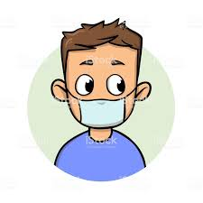

7 etapas para planejar a cibersegurança em caso de uma pandemia
Home | Informação | Formulário
Toda operação de segurança deve perguntar se está preparada para uma pandemia após o surto de coronavírus. Comece concentrando-se nessas áreas:
Leia mais
|
Lista ordenada
- Comece a se preparar para uma pandemia precocemente
- Estabeleça uma "linha de base da inteligência"
- Identifique possíveis gatilhos, tolerâncias e respostas a riscos
- Garanta uma resposta coordenada
- Pense globalmente
- Teste de estresse em todas as esferas da capacidade de trabalho remoto
- Seja transparente ao compartilhar atualizações
|
Proteja a si mesmo e as pessoas ao seu redor conhecendo os fatos e tomando as precauções apropriadas. Siga os conselhos da autoridade local de saúde.
Para evitar a propagação da COVID-19, faça o seguinte:
Leia mais
|
Lista não ordenada
- Lave suas mãos com frequência. Use sabão e água ou álcool em gel.
- Mantenha uma distância segura de pessoas que estiverem tossindo ou espirrando.
- Use máscara quando não for possível manter o distanciamento físico.
- Não toque nos olhos, no nariz ou na boca.
- Cubra seu nariz e boca com o braço dobrado ou um lenço ao tossir ou expirar.
- Fique em casa se você se sentir indisposto.
- Procure atendimento médico se tiver febre, tosse e dificuldade para respirar.
|

Leia mais
|
Máscaras
Quem usa máscara pode ajudar a prevenir a propagação do vírus para outras pessoas. Isoladamente, as máscaras não são uma proteção contra a COVID-19, e o uso delas deve ser combinado com o distanciamento físico e a limpeza das mãos. Siga as orientações da autoridade local de saúde.
|